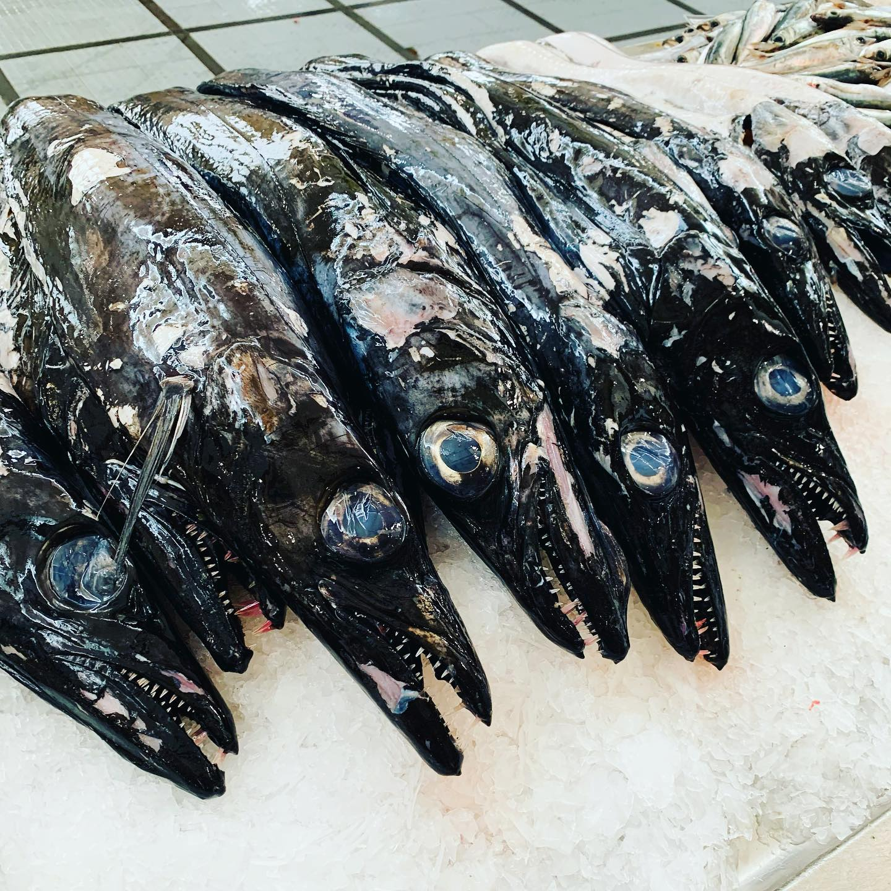

Ryby podľa @ryszardbaraban — Normy Jedál
Espada Preto - czyli pałasz czarny żyjący w Oceanie Atlantyckim pomiędzy 69 N a 27 N na głębokości od 200 do 1700 m. Ryba drapieżna, która w nocy w toni wodnej wynurza się do głębokości około 200 m aby żerować . Żywi się rybami, skorupiakami i głowonogami .
Pszepyszna ryba, która tradycyjnie podawana jest ze smażonym bananem na Maderze . Mniam 😋
Zawsze podczas wycieczki Zachód jemy Lunch w lokalnej restauracji w São Vincente Ferro Velho .
#maderaryszardbaraban #madeiranowordsneeded #madeira #ryszardmadera #przewodnik #guide #polskiprzewodniknamaderze #wycieczki #polskiewycieczki #pałasz #espadapreto #ryby #rybydrapiezne #travel #visitmadeira #instatravel #oceanatlantycki #portugal #portugalia #polskadziewczyna #polskichłopak #warsawgirl #warsawboy #katowicegirl #katowiceboy #połowy